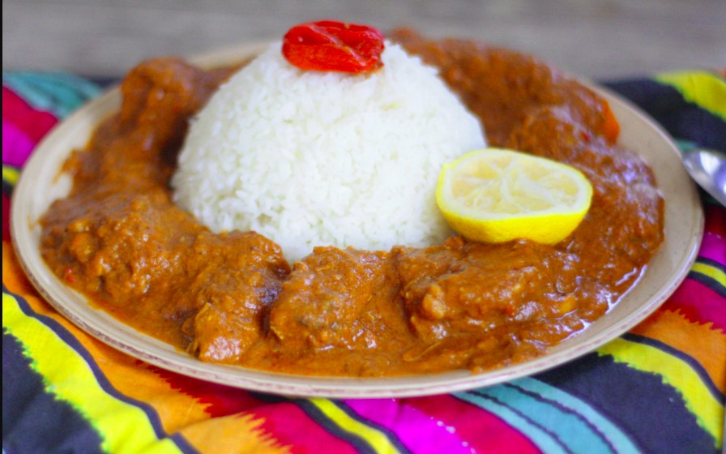

Mafe recipe

Description
This also is a dish from westAfrica and its origin is fairly discussed as every country jokingly claims it belonging to them
Engredients
- peanut butter
- oil
- rice
- meat
- vegetables
- gombo pouder
- tomato sauce
Steps
- you start by frieing the meat and add a little of tomato sauce after 6-7mins
- add some water 5mins after
- add the peanut better after you watered it to make sure it get mixed and mix it
- spice the sauce with your favorite spices and add the vegetables
- add the gombo pouder and mix it
- vaporize the rice
- Once it gets ready set the table and enjoy!!!
Home page